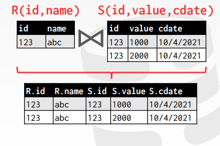
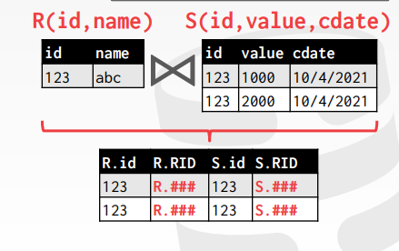

Why do we need to join
因为数据在关系型数据库中的存储，是按照数据模型间的连接关系分开的
所以，如果想要获取一连串相关联的数据，就需要用join连表查询
本节主要研究的是内连接，用相等谓词连接的算法
在进行join的时候，有个原则就是尽量把小一点的表放到左边（也就是外表）
PS：本节说的小表，都是指文件页少的数据表
Join operators
首先就要研究算子的输出，向上级输出的数据是什么类型的
接着就要研究不同算法的花费，并根据开销决定用选取算法
Output
Data
early materialization（提前物化）
向上输出的是两个表连接后得到的数据，即把整条数据记录都往上传
优点：算子得到的结果不需要回表查询
缺点：传输整条数据的开销过大
Record ids
late materialization（延迟物化）
向上输出的是数据记录的id号
优点：数据在算子间的传输开销较小
缺点：如果想要获取完整的数据记录，就需要回表查询
Cost analysis criteria
对算法的开销进行分析
以磁盘的IO次数衡量算法的开销
笛卡尔积
笛卡尔积是解决join最朴素的方法，但它是非常低效的
因此，为了降低连表查询时开销，提出了以下算法：
- nested loop join（simple，stupid，block，index）
- sort-merge join
- hash join
Nested loop join
嵌套循环join
Simple nested loop join
简单嵌套循环，分为外层循环和内层循环（可以理解为O(n^2)的循环）
外层循环时遍历R表的每一行，针对R表的每一行
再在内层循环中遍历S表中的每一行，进行匹配
具体的操作就是读取外表（R表）的每一条记录，然后从头开始遍历一遍S表，看看是否能够匹配上
PS：此时内存最少能够存放三个数据页即可（R、S表的数据页，以及匹配结果的数据页）

缺点：没有充分利用到缓存池的特点
- 比如说对于R表的第一条记录进行join的时候，会轮流将S表的数据都读到buffer中
- 而在用完S表的数据后又会将它放回磁盘，并在对R表的第二条记录进行join的时候重新读入
- 此时就会发现buffer失效了，明明可以重复利用此前读入内存的S表的数据页，但都没有用上
- 即，这种做法并没有利用缓冲池能提高内存页的利用率的优点
算法开销
要读取整个R表，所以是M（总共有M个数据页）
对于R表中的每一条记录，都需要一一和S表中的数据匹配，所以是m * N（R表中有m条记录，每条记录都需要读取S表的N个数据页）

Block nested loop join
一个优化思路，此前都是按照一条条数据记录进行join，可以改进为按照数据页进行遍历
先读取R数据表的数据页A
然后再依次的遍历S中的数据页，从而将数据页A中的数据一一对上
接着再读取R表的下一个数据页B，一次类推
PS：此时内存最少能够存放三个数据页即可（R、S表的数据页，以及匹配结果的数据页）
下图的block可以理解为一个页Page

算法开销
要读取整个R表，所以是M（R表中有M个页）
而此时是以数据页进行匹配的，即每个数据页都匹配一遍S表，所以是M * N（R表中有M个页，S表有N个页）

基于缓冲池的优化
假设内存缓冲池中有B个缓存页
选取其中一个页作为输出缓存，一个页作为内表（S表）的缓存
剩下的B-2个页作为外表（R表）的缓存
此时的流程：将R表的数据读入内存后，依次从头遍历S表的每一页，将S表上的数据和R表上的数据进行匹配

算法开销
M + (M / (B - 2) * N)
- M表示要将R表中所有的数据都读取一遍
M/(B - 2)表示将R表中的数据全数放入大小为B - 2内存中，需要多少次- 因此如果``B - 2 > M
，那就相当于只需要M + N`

Index nested loop join
思考：为什么simple/block nested loop join那么慢？换言之，为什么一定要完全遍历S表的所有数据？
主要是因为内表（S表）没有加索引，导致每次数据的查询必须全遍历，由此引申出基于索引的查询
算法的开销：M + (m * C)（C是指每次查询所有需要的页数）

Summary
如果选取nested loop join作为join的算法，那么：
尽量把小一点的表作为外表（这样遍历内表的次数就会减少）
尽量缓存多一点外表的数据，这样可以减少内表的遍历次数
- 因为我们是以外表为核心遍历的，所以内表的数据缓存下来是没有意义的，每次都还是得从头遍历
每次查找都会一直遍历循环内表，因此提出利用索引进行查询，提高效率
Sort-merge join
将需要进行join的数据列，先进行sort，然后再merge

merge时的一些细节：
首先，哪一边较小，就将小的一边的指针往下移一位
而，对于双指针中二者值相等的时候，一般的做法是输出值后同时下移指针
但这里内表（S表）中可能会出现多个数据相同的情况，如果同时下移指针可能会略过一些数据
所以不能同时移动两边的指针，而只能移动内表的指针（即移动S表的指针）
算法开销
排序时的开销就是上一节所说的外部排序

缺点：如果两边的数据全都一样，或者说重复的数据太多，在最严重的时候会导致退化为simple nested loop join
- 比如两个表的数据都是完全一样的话，那么执行效率上就会和Simple nested loop join的双层循环一样了
那什么时候该算法才是最高效的？
- 当数据本身就排好序了，就减少了sort的过程，直接merge（比如说下一级算子给的数据是有序的，或者是从index读取的数据）
- 或者说需要的数据本身要求是有序的，那么sort就必不可少（比如说是按照索引读取数据的）
Hash join
思考：发现B+树的查询有点随机性（和树的结点数和层数有关）；并且我们的需求其实是点查询，不需要B+树范围扫描的特性
而点查询中最快的是hash，因此引入了hash查询
Basic hash join algoritham
Phase I：build，扫描外表数据，构建hash表
Phase II：probe，扫描内表的数据，放入hash表中查询

Hash table values
hash表中的key是语句用于join的那一列数据
而value有以下几种表示方法：
- 提前物化（full tuple，将整个元组作为数据存储）
- 推迟物化（tuple identifier，即是数据的行id之类的，后续回表取数据）

Probe phase optimization
背景：发现如果使用hash匹配数据，没匹配上很浪费时间精力，因此想要用bloom filter进行优化
即用外表做一个hash，同时维护一个bloom filter，然后内表查数据的时候，就先查bloom filter，如果没有就不继续查了
为什么bloom filter可以提高性能，因为内表查询数据首先会去filter中查找，如果没找到，就会跳过当前数据
而如果没有bloom filter的话，就会加载hash表的page，然后去寻找（这种磁盘的IO无疑是浪费资源的）
所以bloom filter就可以提早知道数据不存在，就不会去读取内存，从而提高效率
PS：bloom filter会出现假阳性
算法开销

Grace hash join
背景：上述算法的主要问题是：内存不够，会导致hash难以构建，那该怎么办？因此需要把一些hash表的数据放到硬盘中
但是又不需要随机的将数据页驱逐到磁盘中，而是希望能够控制内存页驱逐的策略
- 所以有了grace hash join
Phase I：用同一个hash函数，把R表和S表分别做一个hash表1和hash表2
Phase II：把R表的hash表1和S表的hash表2，各取一个分区的数据，进行nested loop join
- 这里的原理就是，都是用的同一种hash算法，能够join的元素必然是在同一个分区当中的

Recursive partitioning
背景：上述的假设中，每个单独的bucket（即分区）是可以放入到内存中的
但，如果一个分区的元素都非常多，都放不到内存中，该如何处理？
解决办法：对这个非常大的分区，对两边的数据表，再用一个新的hash函数进行hash，直到能够分到足够小的块

算法的开销
partitioning phase：2（M + N）
- 无论是内表还是外表，一次是要把数据从硬盘读到内存中，另一次是要把数据放到hash表中并写入磁盘
- 这里假设hash表的页数也是和原来的数据表同页
probing phase：M + N
- 两边分别把hash表的数据都读入到内存，所以就是M + N
- 读到内存的数据再进行nested loop join
因此总共的开销是3 * (M + N)

Observation
如果提前知道外表的大小，就可以用静态的hash表对数据操作，而不是使用动态扩容的hash表
Conclusion

如果是两个大表做join的话，最好就是做hash join（绝大部分情况下，都是选择hash join的）
但，如果需要数据是倾斜的，即发生hash冲突的概率较大（会导致算法退化），那么最好还是选择sort-merge
或者，输出结果需要被排序的时候，会选择sort-merge
一般，比较好的DBMS会选择hash join和sort-merge join